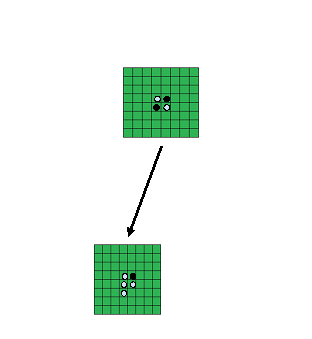
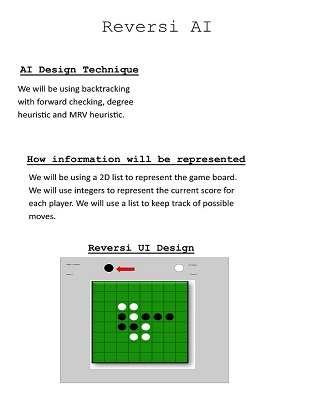

Reversi
A new challenger has entered the ring
For this project, we will use agile methodology to develop an Artifical Agent that will challenge a human opponent in a friendly game of Reversi. Various search techniques will be used on a search space of possible moves on an 8 by 8 board. Reversi, also kown a Othello, is a 2 player game played on an uncheckered board with 64 identical game pieces. The objective of the game is to hve the most pieces of our team's color on the board. Each player takes turns placing their piece down on the board adjacent to a piece that's already on the board. On your move, depending on where you placed your piece, the opponent's pieces are converted to your color between your placed piece and an already placed piece of your own color.
Picture
Here is a picture of a possible move the AI would make against a human
Video Implementation
Poster
Here are the design requirements:
Sources
- Template From: HTML5up.net
- Game board picture: https://bonaludo.com/2016/02/18/reversi-and-othello-two-different-games-do-you-know-their-different-rules/
- Reading: https://inventwithpython.com/chapter15.html